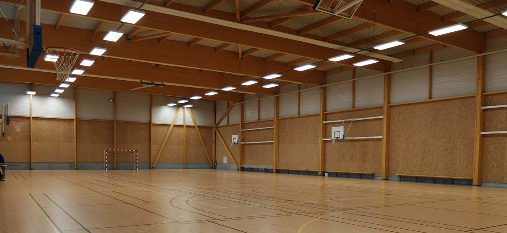
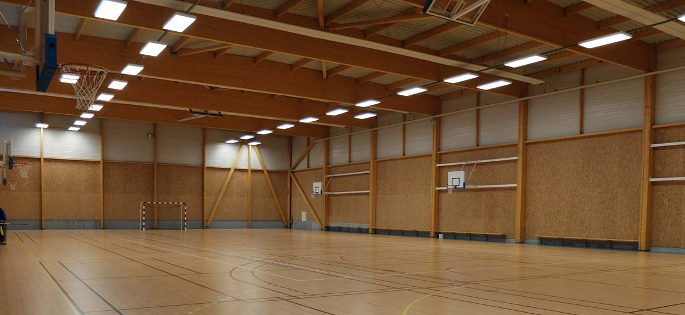

Bilam: Die starke Grundlage für modernes Bauen
Innovative Holzlösungen, die Langlebigkeit, Design und Funktionalität vereinen.
Innovative Holzlösungen, die Langlebigkeit, Design und Funktionalität vereinen.

Unsere Holzprodukte werden mit größter Präzision und nach strengsten Qualitätsrichtlinien gefertigt. Sie bieten maximale Stabilität, eine beeindruckende Ästhetik und Langlebigkeit – perfekt für Bauprojekte, die höchsten Ansprüchen gerecht werden.“

Unser Holz steht für verantwortungsvolle Ressourcennutzung und stammt aus nachhaltiger Forstwirtschaft. Durch kurze Transportwege und umweltfreundliche Prozesse minimieren wir die Umweltbelastung und reduzieren Abfälle durch effiziente Verarbeitung.

Mit modernsten Technologien setzen wir neue Maßstäbe im Holzbau. Digitale Prozesse und präzise Fertigung garantieren höchste Effizienz und Genauigkeit. Unsere Lösungen verbinden traditionelle Materialien mit der Zukunft des Bauens.n
Vorteile
Höchste Tragkraft: Perfekt für anspruchsvolle Konstruktionen.
Hoher Brandwiderstand und robuste chemische Resistenz.
Ein nachhaltiger Baustoff , der erneuerbar ist und umweltfreundlich wiederverwendet werden kann.
Höhere Steifigkeiten gegenüber Vollholz der gleichen Festigkeitsklasse.
Reduktion von Spannungen durch Ausrichtung der Jahresringe.
Geringe Verformung durch Feuchteänderungen.
Bilam-Holz ermöglicht Architekten kreative und anspruchsvolle Designs dank seiner hohen Tragkraft und exzellenten Stabilität.

 
